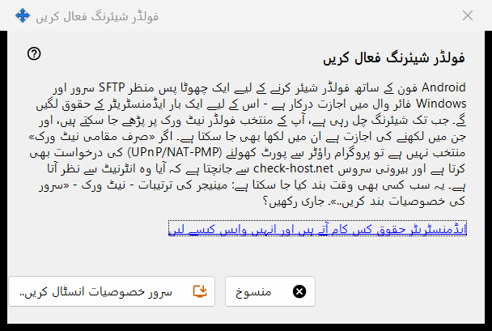
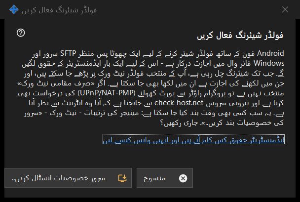

فولڈر شیئرنگ فعال کریں
یہ کس مقصد کے لیے ہے
شیئرنگ کا سرور والا حصہ انسٹال کرنے کی اجازت مانگتی ہے: پس منظر میں چلنے والا ایک چھوٹا SFTP سرور اور Windows فائر وال کا ایک استثنا۔ یہ مرکزی ونڈو کے سرور خصوصیات فعال کریں.. بٹن سے اور وزرڈز سے کھلتی ہے، اور ایک بار ایڈمنسٹریٹر حقوق مانگتی ہے۔


اس ترتیب میں
- وضاحت پڑھیں۔
- سرور خصوصیات انسٹال کریں.. بٹن دبائیں۔
- Windows کی ایڈمنسٹریٹر درخواست کی تصدیق کریں۔
- نتیجے کی لائن کا انتظار کریں؛ کامیابی پر ونڈو بتاتی ہے کہ فولڈر شیئرنگ فعال ہے۔
- بغیر تبدیلی کے نکلنے کو منسوخ دبائیں۔
عناصر
یہ کیا کرتی ہے
Android فون کے ساتھ فولڈر شیئر کرنے کے لیے پس منظر میں چلنے والا ایک چھوٹا SFTP سرور اور Windows فائر وال کی اجازت چاہیے۔ شیئرنگ چلنے کے دوران چنے ہوئے فولڈر نیٹ ورک پر پڑھے جا سکتے ہیں، اور جو تحریر کے لیے کھولے گئے ہیں ان میں لکھا بھی جا سکتا ہے۔ جب تک صرف مقامی نیٹ ورک والا اختیار نہ چنا گیا ہو، پروگرام روٹر سے ایک پورٹ کھولنے کو بھی کہتا ہے (UPnP/NAT-PMP) اور پتے کی جانچ ایک بیرونی سروس سے کرتا ہے۔
نتائج
مکمل۔ فولڈر شیئرنگ فعال ہے۔؛ درخواست مسترد ہونے پر شیئرنگ فعال نہیں ہوئی - ایڈمنسٹریٹر حقوق نہیں ملے۔ (کچھ نہیں بدلتا اور آپ دوبارہ کوشش کر سکتے ہیں)؛ یا فائر وال کی ناکامی، جس میں دوبارہ کوشش کرنے اور ٹرے آئیکن کے مینو سے لاگ بھیجنے کو کہا جاتا ہے۔
ایڈمنسٹریٹر حقوق اور انہیں واپس لینا
لنک وضاحت کرتا ہے کہ حقوق کس کام آتے ہیں۔ اسے واپس کرنے کے لیے مینیجر کی ترتیبات میں سرور کی خصوصیات بند کریں.. استعمال کریں: شیئرنگ رک جاتی ہے، جڑے ہوئے فون منقطع ہو جاتے ہیں اور فائر وال کی اجازت ہٹا دی جاتی ہے۔ فولڈرز کی فہرست اور پاس ورڈ برقرار رہتے ہیں، اور سب کچھ دوبارہ آن کیا جا سکتا ہے۔
مینیجر کی ترتیبات · SFTP اشتراک کی ترتیبات · ایکسچینج سرور کی ترتیبات